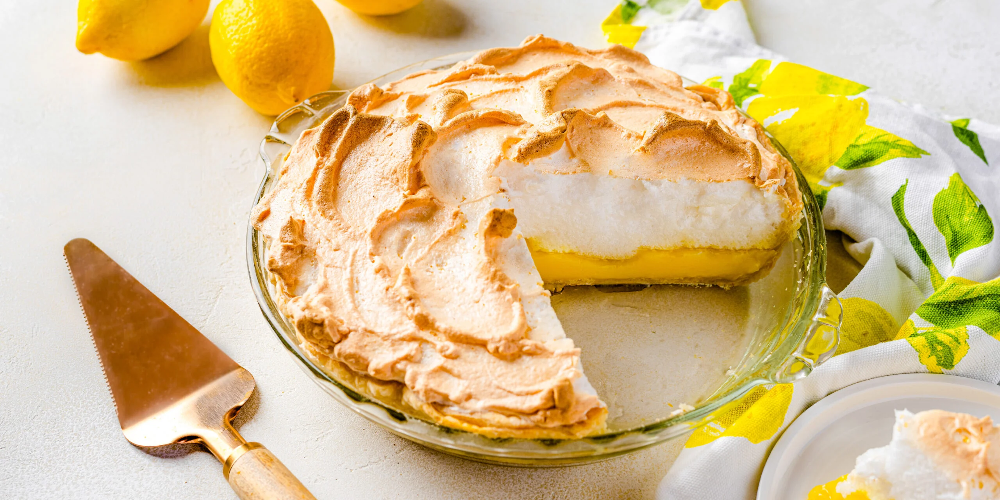

This baked dessert is made with a base layer of shortcrust pastry that is topped with lemon custard and fluffy meringue. The custard is usually made with a combination of lemon zest and juice, sugar, egg yolks, and (sometimes) starch. The origins of this sweet treat are murky and mysterious – some credit Elizabeth Coane Goodfellow of Philadelphia as the inventor, but her 18th-century recipe mentions lemon pudding, while the meringue is used in minimal amounts, as an accent.
Meal prep time : 40 minutes
Servings : 8